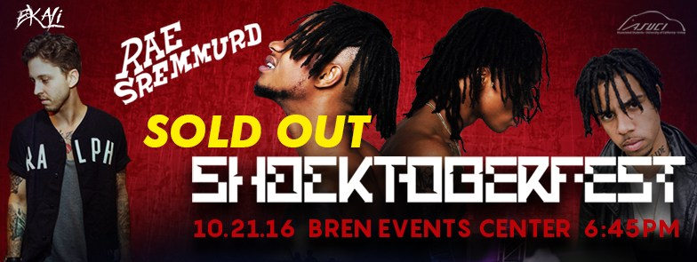
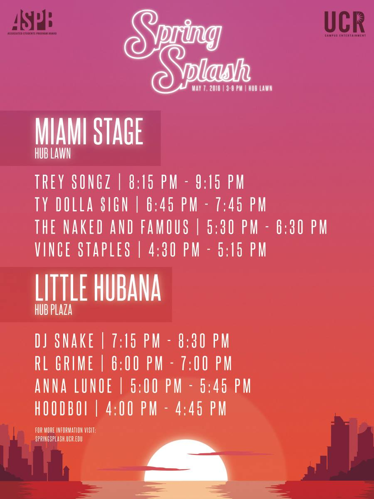
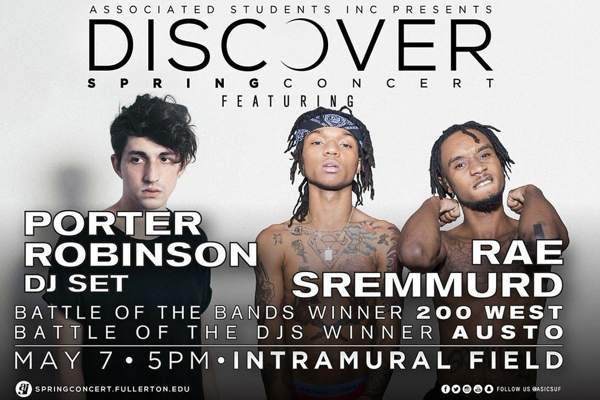
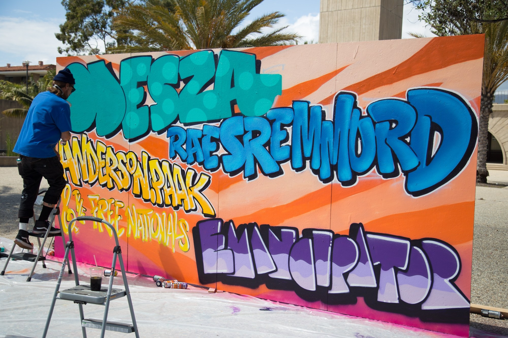

Springfest 2015 was my first concert ever during my first semester at USC as a Spring Admit. A little background on the type of person I was between my first day in college and Springfest, I was an introvert that didn't go out to parties, concerts, or social gatherings to begin with. So Springfest being my first event, I was already discouraged at the idea of going even if all my friends were going.
Thankfully, I went and it was one of the best decisions I ever made. I want people to experience the same thing I did when I went to 2015's Springfest. That was my first concert ever and I had a blast. 2015's Springfest got me hooked onto live music and convinced me to go to Mountain View's BFD, which led to Hard Summer, which also led to Outside Lands. Since then I've gone to a handful of festivals and small shows that I've listed here:
Shows I've Seen
Free Shit, Fun Shit, Music
Just as a disclaimer the rest of my writing is pretty critical because it's about a subject that I'm relatively passionate about. I want everyone to experience fantastic live music so when that experience is ruined for others I get all types of riled up.
The primary objective of USC Concerts Committee is to bring the beauty of live performances and convince students that have never previously been to a concert before, that seeing artists live is not the same as pressing play on your iPod or computer.
To give a soft recap of my 2015 Springfest, Walla played first and they were pretty cool, they were perfect for the Spring vibe and the early timeslot that they were given. This was when we ran around to all the fun booths and grabbed free stuff. By the time the sun was starting to set, Borns, Portugal the Man, and GTA got on stage each and every single one of them destroyed their respective timeslots and gave students something to be more than satisfied with. All of those artists were beyond fantastic for the 3 hours they played and it was obvious that whoever reached out to them, knew that they would perform great live and give the students a show to remember.
I wish every show since Springfest 2015 was just as good if not better, but this has not been the case because the last good concert was almost 2 years ago. I'm not saying that any of these artists that came in recent memory are bad, I'm just saying if a committee whose purpose is to bring great live performances and introduce the beauty of live music to people who have never experienced it before, USC Concerts Committee isn't doing a fantastic job at it.
I'm seeing all these kids and people come out to USC's low energy concerts and see that they feel the urge to not come back and think they're all a waste of time. But they're not, you just have the wrong people introducing it to you. Just like anything new you try or retry, you'll always have to base it off the first experience you've had with it.
The Core Problem
So why don't you join Concerts Committee and try to make a difference in terms of bringing the artists that you subjectively think are good?Well I have joined, I went to the first three meetings of Fall 2016 Semester and have got to say that it was not my collaborative cup of tea. For the most part, the only people who really have a say in what artists are contacted, pursued, and brought onto campus are for the most part the two directors that head Concerts Committee. During the first meeting, everyone was asked to say what artists they wanted to bring to campus and this is really fun because it makes people feel like they have a say. Of course you had your fair share of impossible suggestions like Kanye, Drake, or Beyonce, then you had really small names in which the two directors would respond negatively to and say
What name was that? Oh, eee-kah-lee. How do you spell that?versus
Ayyy I like that suggestion.and with these context clues it becomes very easy for people to see which artists our two directors will go out and pursue. One person even brought up, the fact that Robby from Louis the Child went to our school and why USC Concerts Committe couldn't get him to perform for us; I couldn't see why they wouldn't get him to perform either, Louis the Child as a duo are both fantastic DJs, producers, and hypemen. But that's when a director said,
Why bring Louis the Child when I can just see them at Phi Delt?At this point you can already tell where the quality of our concerts is coming from; its rooted within the self-interest of others and personal preference. You can make that argument as to why bring any artist when you can see them by your own means and that we don't deserve the privilege of even having artists come to campus at all. The rest of us don't have the ability of attending fraternity parties, I sure as hell don't, when am I ever going to get to see Louis the Child if I don't drop money on a concert ticket or a festival pass? Never.
Concerts Committee is supposed to fix this problem, not amplify it. Having a pair of directors that seem unwilling to explore new artists beyond their own seem to be the cause of the low-turnout at 2016's Conquest and Welcome Back Concert.
Three and a Half Step Process
Cater to The Audience (Knowing your User Base)
If you look at other schools and their lineups you'll realize that they bring super fun artists to schools that a majority of college students can enjoy.
Attracting Your Audience (Drawing in Customers)
In order to afford or bring artists people want to see without making it financially unfeasible, they offer tickets for sale that students and possibly outsiders can purchase in order to help subsidize the cost of the concert and bring acts that people will actually turn out for. These tickets are usually $5-$40 which is more than worth it for a handful of artists that people will actually come out and see. If you take a look at UC Riverside's Spring Splash, they had a side stage that had RL Grime AND DJ Snake. Just one of those acts could headline any of our past concerts and attract hundreds of students to come out.
Retaining Your Audience (Daily Active Users)
So at this point, if people do come, just like any type of product or experience, you want them to stay or keep coming back to future events.
Rule to Always Follow: Bring a DJ or a Known Stellar Live Performer
DJ's can play any genre of music from EDM, Rap, Hip-Hop, Trap, or Chillwave, literally any genre music all within one set. This would please a handful of people and they are also incredibly high-energy. Anyone who goes to a party will always acknowldege that a DJ has to play really fun engaging music for the audience to have fun.
Although they may not produce their own music, they drop incredibly fun sets and are usually cheap to bring onto campus.
Examples of Entertaining Shows or Sets
Here is the "Eee-kah-Lee" person, UCR also had him (Hip-Hop, Trap, Rap)
Manila Killa who most people probably never heard of either (EDM-based)
Illenium who a lot haven't heard of yet (EDM-based)
RL Grime because UCR had him on a SIDE stage (Hip-Hop, Rap, Trap)
Other School Concerts
 UC Irvine  UC Riverside  CSU Fullerton  UC Santa Barbara Previous Return to Text
Shows & Artists I've Seen
Springfest 2015
- Walla
- Isaiah Rashad
- Borns
- Portugal the Man
- GTA
- 2 Chainz (not good)
Flume at UC Davis 2015
- Alunageorge
- Kaytranada
- Flume
Mountain View's BFD 2015
- Misterwives
- Twenty One Pilots
- Atlas Genius
- Cold War Kids
- Vicetone
- GTA
- Martin Solveig
Hard Summer 2015
Day 1
- Ganz
- Djemba Djemba
- Matoma (extremely boring & repetitive)
- Bro Safari
- The Glitch Mob
- Valentino Khan
- Giraffage
- Odesza
- DJ Snake
- Porter Robinson (Live)
- Dillon Francis
- Hermitude
- Jai Wolf
- Jauz
- DJ Mustard & Friends
- GTA
- What So Not
- Zeds Dead
- RL Grime
- Jack U
Outside Lands 2015 (Friday)
- Robert Delong
- Lindsey Stirling (also repetitive)
- RL Grime
- Porter Robinson (Live)
- Mumford & Sons
Ruby Skye in San Francisco
- CRNKN
- Nghtmre
Escape Wonderland 2015 at NOS Event Center
- Seven Lions
- Porter Robinson (DJ Set)
- Mat Zo
- Laidback Luke
- Martin Garrix
El Rey Theater in Los Angeles
- Chet Porter
- Lemaitre
- Sweater Beats
Fonda Theater in Los Angeles
- Ganz
- Hermitude
- Keys N Krates
- Michl
- Mura Masa
Beyond Wonderland 2016 at San Manuel Theater
- Delta Heavy
- Troyboi
- Bro Safari
- Ghastly
- Yellow Claw
Sousltice at San Jose Civic Center
- PRXZM
- Luca Lush
- Hermitude
- Branchez
- Illenium
- Mija
San Jose Event Center
- Chet Porter
- Odesza
Slim's in San Francisco
- Electric Mantis
- Said the Sky
- Illenium
The Regency Ballroom in San Francisco
- Slow Magic
- Giraffage
- Manila Killa
- Hotel Garuda
- Jai Wolf
The Yost in Santa Ana
- Ekali
- San Holo
The Observatory in Santa Ana
- Odesza
The Novo
- Ben Philips (super mellow)
- Autograf (pretty mellow)
- Goldroom (also mellow)
The Novo
- Trippy Turtle
- Jai Wolf
- Cashmere Cat
The Shrine Auditorium in Los Angeles
- Louis Futon
- Odesza
- The Chainsmokers (Amplify)
- Dillon Francis (Amplify)
- DJ Snake (Amplify)
- Dillon Francis (Day 1 Dillstradamus)
- Flosstradamus (Day 1 Dillstradamus)
- Dillon Francis (Day 2 Dillstradamus)
- Flosstradamus (Day 2 Dillstradamus)
- Slushii (Day 1 Marshmello)
- Marshmello (Day 1 Marshemllo)
- Slushii (Day 2 Marshmello)
- Marshmello (Day 2 Marshemllo)
- San Holo
- Porter Robinson & Madeon (Shelter)
B&L Events in Los Angeles
- Coyote Kisses
- Graves
- Dada Life
Hard Summer 2016
Day 1
- Graves
- Unlike Pluto
- Jerry Folk
- Louis The Child
- San Holo
- Baauer
- Madeon
- Mr Carmack
- Pretty Lights (for like 5 minutes)
- Whethan (this kid is 16 and he's killing it)
- Manila Killa
- Haywyre (artistic but mellow)
- Ekali
- Vindata
- Dillon Francis
- Porter Robinson (live)
Outside Lands 2016
Day 2 (Saturday)
- Halsey
- Anderson.Paak & The Free Nationals
- Zedd (boring)
- Snakehips
- Chance The Rapper
- Major Lazer
Bill Graham Auditorium in San Francisco
Shelter Tour
- Robotaki
- San Holo
- Porter Robinson & Madeon (Shelter)
Countdown 2016
Coachella 2017
USC Events (Not Springfest 2015)
Welcome Back Concert 2015
- Post Malone
- Trash, only had one song at the time that people knew and his overall performance was subpar.
- Cashmere Cat
- Given that the college environment and crowd is incredibly "turnt," Cashmere Cat was not a good fit for the target audience.
- ILoveMakonnen
- Mumbled half the songs he "rapped" to and the rest were poorly rapped verses voiced over a pre-recorded track.
- Miguel
- Stood there and preached. I left 15 minutes into his set because it got out of hand.
- Big Wild
- Outright fantastic, the fact that he only played for 30 minutes is an insult to his talent. This guy drummed, played the cajon box, whistled, played piano, and DJ'd his set. He was super groovy and to be honest should have either played for more than 30 minutes or for atleast a later time slot.
- The Internet
- Horrible singing. All I remember was the lead singer telling us to put our left arm up, then right arm, then swing them side to side. Other than that it was a really boring act. Maybe it was an off day.
- Jeremih
- Came an hour late, caused Jamie XX's set to be pushed back an hour, and by the time Jamie XX came to play, everyone was already fed up and tired so a good amount of people left. But Jeremih himself wasn't bad, it was just a combination of a bad concert experience coming from his unpromptness, The Internet's off-putting vibes, and the handful of outsiders that came onto campus.
- Jamie XX
- Although a great producer, his mellow style is a lot like Cashmere Cat and not meant for the college crowd that is yearning for high energy music (GTA & Diplo & 3lau).
- Mike Will Made It
- Didn't mix any songs at all. He pretty much played off of his iPod and everytime he needed to transition to another song, he screamed "Are you ready for some new music?!" and obnoxiously pressed the horn button on his mixer.
- Majid Jordan
- Incredibly boring and low energy, something that won't get the crowd hype to beat UCLA. I attribute the unsuccessful turnout to Conquest to the lack of high energy and "fun" artists.
- Alunageorge
- Zhu - Automatic (Vindata Remix), Jack U - Take U There. That's about it; still a boring set.